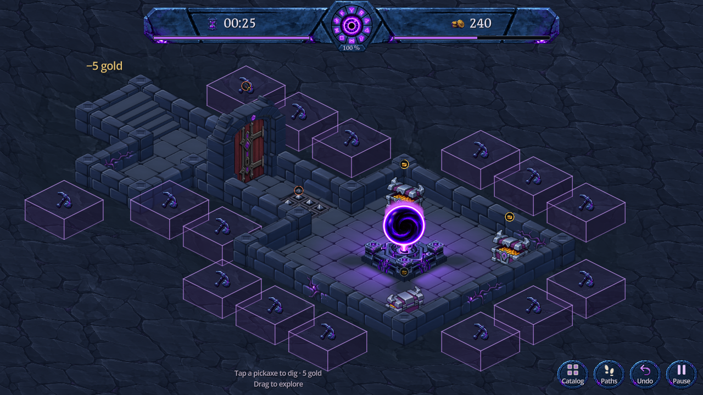
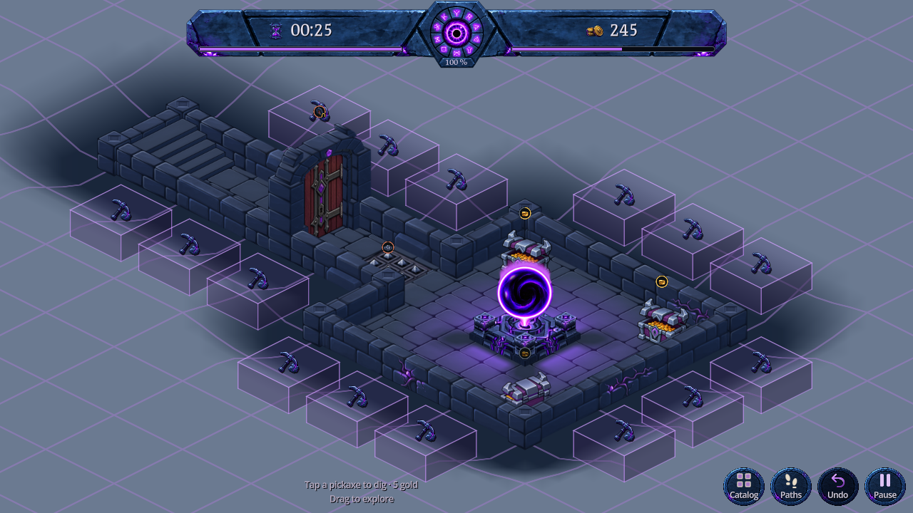

La roche descend maintenant vers le pied des murs par un raccord incliné. Le contour suit l’union des cases creusées, avec des angles extérieurs adoucis et des retours continus dans les coins rentrants. Il s’agit d’un relief réel : la texture suit sa surface.
Les cubes conservent leur base de 0,74 × 0,74 case, la hauteur des murs et leur placement commun par rangée. Le bord extérieur reste à 1,35 case. Cette proposition est dans DigBlocksPreview.

Capture Godot · 1280 × 720 · Raccord continu
Les contrôles changent aussi le détail. La vue portrait est déplacée vers ce bord du donjon pour inspecter le même raccord.
Capture de la même géométrie dans Godot, avec des couleurs simples et la grille. La roche extérieure est à la hauteur des murs ; le fond du dégagement est au niveau du sol. La bande inclinée relie les deux sans faces verticales indépendantes.

Le problème comportait aussi un défaut d’ordre de dessin : des faces basses recouvraient la roche supérieure. Le rendu partagé dessine désormais le dessus opaque en dernier. Reproduction avant correction : quatre cas avec des pixels incorrects, et deux vues portrait sans échantillons exploitables. Après déplacement de la caméra portrait, les six vues sont couvertes : 14 contrôles passent. Le comparatif « ancien décroché » conserve cette correction d’occultation pour isoler le changement de relief.
48 contrôles de géométrie couvrent une case, un angle rentrant, deux zones séparées, un îlot de roche, la carte vide et le donjon avant/après le creusement réel de la case (4,9). Hauteurs bornées, couverture complète, absence de triangles retournés dans la projection et annulation exacte. La maquette courante contient 1 177 sommets et 2 192 triangles ; la géométrie se reconstruit uniquement quand l’occupation du sol change.
337 contrôles d’interaction, 12 974 contrôles de taille/espacement (24 creusements puis 24 annulations) et 7 contrôles de maçonnerie passent. Sorties d’erreur vides. Captures natives inspectées en bureau, paysage court et portrait.
Reproduction : godot --path . --script res://tools/verify_continuous_recess.gd, puis verify_terrain_recess.gd, verify_dig_clearance.gd et capture_dig_blocks.gd. Le contrôle des volumes s’exécute sans interface avec godot --headless --path . --script res://tools/verify_dig_block_spacing.gd.
Aucune nouvelle image de texture ; les peintures existantes sont réutilisées. Le jeu principal conserve son renfoncement et sa marge actuels, avec seulement la correction d’occultation partagée. Aucun accès aux sauvegardes joueur, APK, commit ou push. Toutes les cartes possibles et les performances sur téléphone physique restent à valider. 31 octobre 2026.